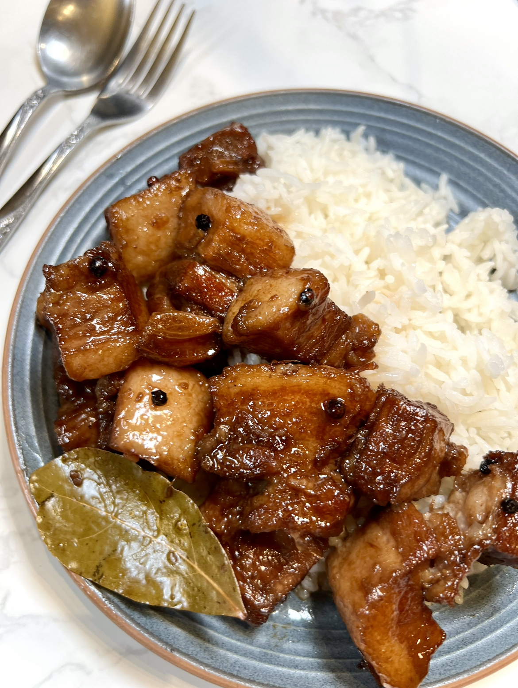
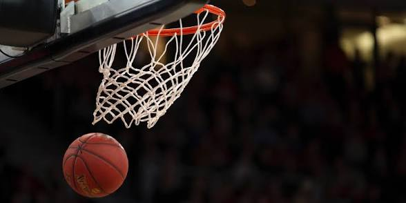

My Favorite Things
Here are some of the things I enjoy the most.

Adobong baboy is my favorite food because it is delicious and tastes even better when eaten with hot rice.
The Karate Kid is my favorite movie because I enjoy watching the training, challenges, and lessons about discipline and never giving up.

Basketball is my favorite hobby because I enjoy playing with my friends, and it also helps me stay active and healthy.
These are some of my favorite things that make me happy and allow me to enjoy my free time. I love eating good food, watching movies, and playing basketball.